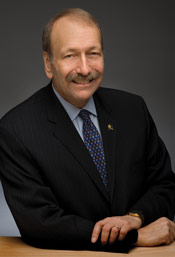

With your help, UCSC is taking on the future and enhancing what is already an extraordinary education.
Private donors gave generously to UC Santa Cruz last year. Even as state support for UCSC declined by $31 million, total giving to the campus jumped nearly 10 percent—from just over $20 million in 2009–10 to nearly $22 million in 2010–11.
Already this fall, our accomplishments fill me with pride: UCSC was ranked third worldwide for research influence; five students won Fulbright scholarships; and we enrolled the most diverse class in campus history. In addition, 45 percent of this year's frosh class will be, when they graduate, the first in their families to earn a four-year college degree. This highest-ever percentage of "first generation" freshmen is powerful evidence that a UC education remains a life-changing goal for thousands of high school students.
Your support provides the gift of education and reinforces our collective commitment to aspiration and transformation. You are a part of the cycle of giving, in which one generation gives a hand to the next.
I invite you to help us keep the cycle going.
Sincerely,
 At UC Santa Cruz, students and faculty have increasingly had to rely on private funding because of declining investment from the state. The UC Santa Cruz Foundation, now 37 years old, is ramping up our support to meet these turbulent times. We thank you for your past help and urge you to join us as we build into 2012.
At UC Santa Cruz, students and faculty have increasingly had to rely on private funding because of declining investment from the state. The UC Santa Cruz Foundation, now 37 years old, is ramping up our support to meet these turbulent times. We thank you for your past help and urge you to join us as we build into 2012.
The Foundation is newly energized, reaching out more widely and deeply to alumni, friends, donors, and the academic community. As the leading philanthropic partner of the campus, our work is growing to meet new demands. Our Board Opportunity Fund, just a couple of years old, has already funded more than a dozen campus initiatives.
All of our trustees have extended their donations and gifts of time to preserve the campus's unique legacy. That legacy, in learning and research, along with our continuing commitment to public service, require all of us to step up. We're glad to say that thousands of other UCSC supporters have come forward as well, and we ask you to join us now in this vital quest.
On behalf of my fellow trustees, let me thank you in advance.
Sincerely,Jerry Ruiz (Crown '77)
Alumni Association president
Retiring Foundation Trustees
The following Foundation trustee retired during the past year. We thank him wholeheartedly for his dedicated service.
Patrick G. Riley (Cowell '68)
Mary E. Doyle (Porter '74)
Vice president, events
Michael P. Graydon (Cowell '70)
Vice president, engagement
Kristen Marinovic (Graduate Studies '91)
Vice president, Board Opportunity Fund
Richard F. Moss (Stevenson '85)
Vice president, board affairs
Betsy Buchalter Adler (Cowell '70)
Parliamentarian

{kind=link}
{kind=link}
{kind=link}